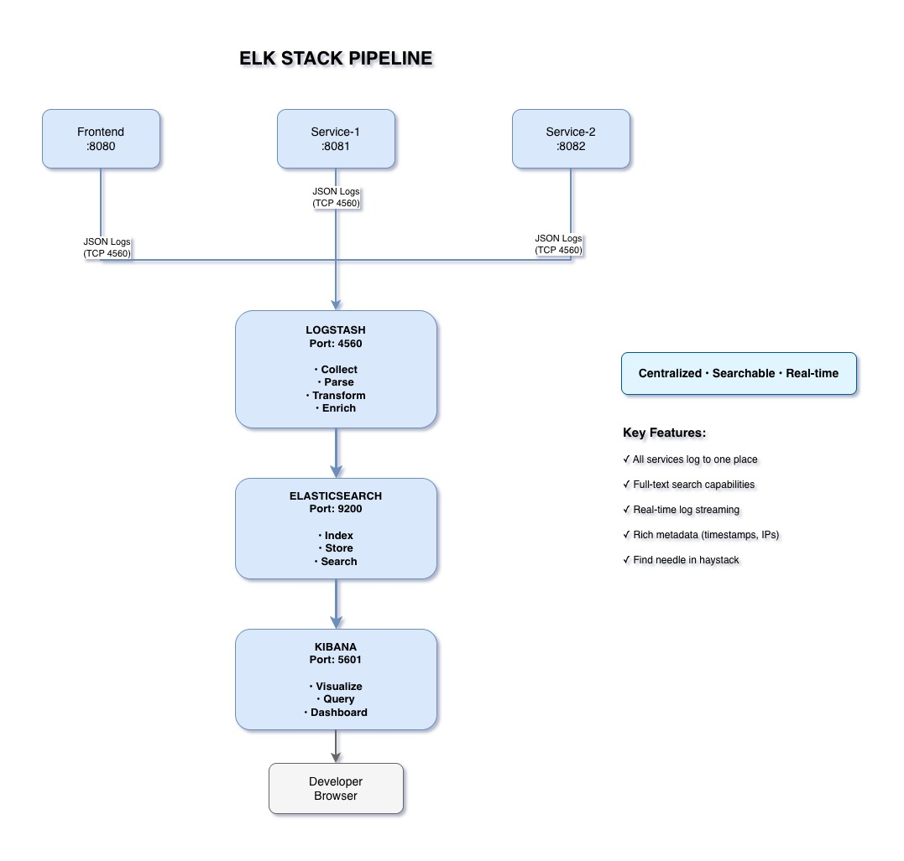

Pillar 1: Logs - Your System's Black Box
Centralize, search, and analyze logs from all services in real-time.

What is ELK Stack?
ELK is the industry-standard solution for centralized logging, consisting of three powerful open-source tools.
The Three Components
The Storage Engine
- Stores and indexes logs
- Full-text search capability
- Distributed and scalable
- Near real-time search
The Pipeline
- Collects logs from services
- Processes and transforms
- Enriches with metadata
- Sends to Elasticsearch
The Interface
- Visualizes logs
- Powerful query language
- Create dashboards
- Set up alerts
How Logs Flow Through ELK
-
Services Generate Logs
Frontend and Backend services log events in JSON format
-
Logstash Collects
Services send logs to Logstash via TCP (port 4560)
-
Logstash Processes
Parses JSON, adds metadata, enriches with context
-
Elasticsearch Stores
Indexes logs for fast searching and retrieval
-
Kibana Visualizes
Query, search, and visualize logs in real-time
Why Use ELK Stack?
All services log to one place. No more SSH-ing into multiple servers to check logs.
Full-text search across all logs. Find any error, user action, or event instantly.
See issues as they happen. Near real-time indexing and searching.
Rich metadata: timestamps, service names, log levels, user IDs, request IDs.
Our ELK Implementation
- Version: ELK 7.10.2 (stable, production-ready)
- Log Format: JSON (structured, machine-readable)
- Transport: TCP over port 4560
- Services: Frontend + 3 Backend instances
- Retention: Configurable (default: unlimited in dev)
Our Log Structure
- @timestamp: When the event occurred
- level: INFO, WARN, ERROR
- logger_name: Which class logged it
- message: The actual log message
- service_alias: Which service (person-front, person-service-client)
- request_id: Correlation ID for distributed tracing
- user_ip: User's IP address
- http_method: GET, POST, etc.
- request_uri: Which endpoint was called
Key Takeaways
- ELK provides centralized logging for distributed systems
- All services send JSON logs to Logstash via TCP
- Elasticsearch stores and indexes logs for fast searching
- Kibana enables powerful querying and visualization
- Real-time visibility into system events across all services